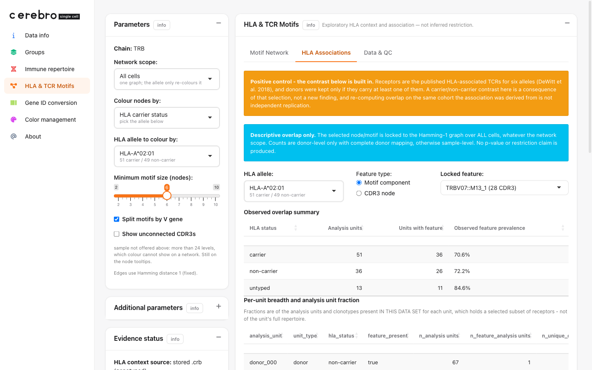

HLA Associations on bulk TCRβ with real donor HLA
Xuesong Wang
24 July, 2026
Source:vignettes/hla_bulk_tcr_associations.Rmd
hla_bulk_tcr_associations.RmdWhat this guide does
CerebroNexus is a single-cell application, and the demo it ships is single-cell: real cells, real paired TCR, real donor genotypes. But the HLA Associations tab also accepts an input that has no cells at all — bulk TCRβ immunosequencing paired with real donor HLA genotypes — and this guide is how you bring your own.
Nothing here is shipped with the package: there is no bundled bulk demo to open. Instead this guide shows you how to build one, either from a real public cohort (Option A) or as a small synthetic object you can run in the next five minutes (Option B).
If you have not read the main guide, skim its “two ideas” section
first — this one assumes you know what a CDR3, a motif, and an HLA
allele are. As before, every code block runs on its own (base R +
Matrix + CerebroNexus, no downloads), and we
print each object as we build it.
How bulk data is different
Bulk immunosequencing does not sequence single cells; it sequences
receptors out of a pool. That changes three things, and the
.crb states each one openly rather than letting the app
guess:
- There are no cells. Each row is a (donor, receptor clonotype) analysis unit. The data set carries a real 0-gene expression matrix (bulk measures no transcriptome) and no projection, so the Projection and Gene expression tabs simply have nothing to draw.
- There is no lineage. Bulk TCRβ cannot tell a CD4 cell from a CD8 cell, so the MHC-class context is Unknown by design — the page must not invent one.
-
Counting is per donor. One donor is one sample, and
we write
donor_idexplicitly, so carrier counts are donor-level.
The payoff: the HLA genotypes are real, so the Associations tab runs on genuine biology instead of an invented genotype.
“Association-conditioned” means positive control, not
evidence. The public cohort’s receptors were chosen
using a published HLA association, and donors were then kept
only if they carry one of those receptors. So any carrier / non-carrier
difference you see was built in by that selection, and
re-checking it on the very cohort the association came from is not
independent replication. Treat it as a positive control that proves the
workflow runs — nothing more. The .crb says so
(technical_info$tcr_selection = "association-conditioned")
and the app shows an orange warning wherever the contrast appears.
The workflow in miniature
Bulk data has no Seurat object, so you assemble the Cerebro object by hand. The essence is short: declare the contracts, store a 0-gene matrix, then add the receptors and the real HLA.
# ... build `meta` (one row per analysis unit), `ir` (receptors), `hla_long` (genotypes)
crb <- Cerebro_v1.3$new()
crb$technical_info <- list(observation_unit = "analysis unit", # a row is NOT a cell
receptor_key = "v_gene+cdr3",
tcr_selection = "association-conditioned")
crb$expression <- Matrix::Matrix(0, nrow = 0, ncol = nrow(meta), sparse = TRUE) # no transcriptome
crb$meta_data <- meta
crb$addImmuneRepertoire(ir) # real receptors
crb$addHLATyping(hla_long, source_type = "genotyped") # real genotypes
saveRDS(crb, "demo_hla_tcr_bulk_toy.crb")
launchCerebro(crb_file_to_load = "demo_hla_tcr_bulk_toy.crb")The rest of this guide fills in meta, ir,
and hla_long, and shows each one.
Two ways to get bulk data into a .crb
Option A — the real public cohort (pubtcrs / Emerson 2017)
The best public source is the Emerson et al. (Nat Genet
2017) cohort as cleaned by DeWitt et al. (eLife 2018),
distributed as pubtcrs_data_v1.tgz on Zenodo record 1248193. It holds 630
donors’ real HLA typing, roughly 11 million public TCRβ chains, and the
paper’s own table of HLA-associated receptors.
data-raw/build_hla_tcr_bulk_demo.R in the repository
downloads and assembles all of it into a .crb — it is kept
as a working, runnable pipeline even though the resulting object is no
longer shipped:
# ~349 MB download; see data-raw/build_hla_tcr_bulk_demo.R for the full pipeline
mkdir -p data-raw/pubtcrs
curl -fL -o data-raw/pubtcrs/pubtcrs_data_v1.tgz \
"https://zenodo.org/api/records/1248193/files/pubtcrs_data_v1.tgz/content"
tar xzf data-raw/pubtcrs/pubtcrs_data_v1.tgz -C data-raw/pubtcrs
# then: Rscript data-raw/build_hla_tcr_bulk_demo.RWhat the raw data looks like
The build (data-raw/build_hla_tcr_bulk_demo.R) reads
three plain-text files out of pubtcrs_data/. Seeing their
shape makes clear where each field of the .crb comes
from.
HLA_features.txt — one line per allele, listing the
indices of the donors who carry it. The build inverts this into
donor → alleles, so a donor’s genotype is the set of alleles whose lists
contain that donor’s index:
feature: HLA-A*02:01 num_positives: 311 positives: 0 2 5 6 9 12 ... num_negatives: 319 negatives: 1 3 4 7 8 ...
feature: HLA-DRB1*15:01 num_positives: 176 positives: 3 8 11 ... num_negatives: 454 negatives: 0 1 2 ...HLA_associated_TCRs.tsv — the paper’s own table of
receptors that show a significant donor-level HLA association. The demo
restricts to these, both to stay inside the graph-size guards and
because this is the table you can check the page’s descriptive overlap
against:
tcr hla_allele pvalue
TRBV19,CASSIRSSYEQYF HLA-A*02:01 1.2e-14
TRBV27,CASSLGQAYEQYF HLA-B*07:02 3.4e-11pubtcrs_info.tsv holds the ~11 million public TCRβ
chains as V family + CDR3 amino acids only — Adaptive’s
immunoSEQ assay does not report a J gene. That single fact is why a
.crb built from it declares
receptor_key = "v_gene+cdr3": a receptor is a V family plus
its CDR3, not the CDR3 alone.
Each row of the built .crb is therefore a (donor,
associated-TCR) pair: the TCR’s V + CDR3 from
pubtcrs_info.tsv, the donor’s real genotype from
HLA_features.txt, and the real observed fact that this
donor’s repertoire contains this TCR.
That needs a large download, so the rest of this guide uses a small
synthetic stand-in that produces a structurally
identical .crb you can run right now. The provenance
differs (synthetic vs. real), but the object layout, the contracts, and
the Associations tab behave the same.
Option B — a small synthetic bulk .crb you can run
now
There is no Seurat object here (no cells), so we build the
Cerebro_v1.3 object by hand.
Real-shaped HLA typing (the canonical long table)
For bulk we write the canonical long table directly
— one row per donor × gene × copy — so donor_id is explicit
and counting stays at the donor level. The first fifteen donors carry
the anchor HLA-A*02:01.
a02_carriers <- donors[1:15]
hla_long <- do.call(rbind, lapply(donors, function(d) {
a1 <- if (d %in% a02_carriers) "A*02:01" else sample(c("A*01:01", "A*03:01", "A*11:01"), 1)
a2 <- sample(c("A*01:01", "A*03:01", "A*24:02", "A*11:01"), 1)
data.frame(
sample = d, donor_id = d,
locus = c("HLA-A", "HLA-A", "HLA-B", "HLA-B"),
copy = c(1L, 2L, 1L, 2L),
allele = c(a1, a2, sample(c("B*07:02", "B*08:01"), 1), sample(c("B*44:02", "B*35:01"), 1)),
stringsAsFactors = FALSE
)
}))Look at what you built — four rows per donor (two
HLA-A copies, two HLA-B):
head(hla_long, 6)#> sample donor_id locus copy allele
#> donor_001 donor_001 HLA-A 1 A*02:01
#> donor_001 donor_001 HLA-A 2 A*03:01
#> donor_001 donor_001 HLA-B 1 B*07:02
#> donor_001 donor_001 HLA-B 2 B*44:02
#> donor_002 donor_002 HLA-A 1 A*02:01
#> donor_002 donor_002 HLA-A 2 A*11:01Clonotypes: association-conditioned receptors over a background
Six “public” receptors are placed in most carriers and almost no non-carrier — the designed-in contrast the positive-control warning is about. Everyone also gets a handful of private background clonotypes.
assoc_tcrs <- replicate(6, list(v = paste0("TRBV", sample(2:29, 1)), cdr3 = rand_cdr3()), simplify = FALSE)
ir <- list(); meta_rows <- list()
for (d in donors) {
clones <- replicate(sample(8:15, 1),
list(v = paste0("TRBV", sample(2:29, 1)), cdr3 = rand_cdr3()),
simplify = FALSE)
for (a in assoc_tcrs) { # associated receptors: ~85% of carriers, ~8% of others
p <- if (d %in% a02_carriers) 0.85 else 0.08
if (runif(1) < p) clones[[length(clones) + 1]] <- a
}
v <- vapply(clones, `[[`, character(1), "v")
cdr3 <- vapply(clones, `[[`, character(1), "cdr3")
bc <- sprintf("%s_%04d", d, seq_along(clones))
ir[[d]] <- data.frame(
barcode = bc, CTgene = v, CTnt = NA_character_, # V family only; bulk has no J gene
CTaa = cdr3, CTstrict = NA_character_, stringsAsFactors = FALSE
)
meta_rows[[d]] <- data.frame(
cell_barcode = bc, sample = d, donor_id = d,
cell_type = "T cell (bulk TCRb)", # a single level: no CD4/CD8 split
stringsAsFactors = FALSE
)
}
meta <- do.call(rbind, meta_rows)Look at what you built — one donor’s receptor table.
Note CTgene holds only the V family (TRBV27),
and CTnt / CTstrict are NA:
head(ir[["donor_001"]], 4)#> barcode CTgene CTnt CTaa CTstrict
#> donor_001_0001 TRBV27 <NA> CASSKIAMLVNDF <NA>
#> donor_001_0002 TRBV25 <NA> CASSVCAMHCAGQIF <NA>
#> donor_001_0003 TRBV16 <NA> CASSRMEDCDVF <NA>
#> donor_001_0004 TRBV26 <NA> CASSIPVSGIF <NA>There is no J gene because bulk immunoSEQ does not report one — the
parser simply leaves j_gene as NA. This is why
the .crb will declare
receptor_key = "v_gene+cdr3": a receptor is identified by
its V family plus CDR3, not by CDR3 alone.
Assemble and save the object
Now set the object’s slots directly, including the declared contracts
under technical_info:
crb <- Cerebro_v1.3$new()
crb$experiment <- list(
experiment_name = "Toy bulk TCRb cohort - synthetic HLA associations",
organism = "hg", date_of_export = format(Sys.Date())
)
crb$parameters <- list()
# the declared contracts the HLA page reads
crb$technical_info <- list(
note = "Bulk TCR-beta immunosequencing; no transcriptome, no single cells.",
observation_unit = "analysis unit", # a row is a (donor, clonotype), not a cell
receptor_key = "v_gene+cdr3", # split by V gene; CDR3 alone would fuse receptors
tcr_selection = "association-conditioned",
tcr_selection_detail = paste(
"Toy positive control: six public receptors were placed preferentially in",
"HLA-A*02:01 carriers, so any carrier/non-carrier contrast is built in."
)
)
# a real 0-gene x N-unit matrix: bulk measures no transcriptome
crb$expression <- Matrix::Matrix(0, nrow = 0, ncol = nrow(meta), sparse = TRUE)
colnames(crb$expression) <- meta$cell_barcode
crb$meta_data <- meta
crb$addImmuneRepertoire(ir)
crb$addHLATyping(hla_long, source_type = "genotyped",
typing_method = "synthetic demo", source_reference = "vignette toy")
crb$addGroup("sample", unique(meta$sample))
crb$addGroup("cell_type", unique(meta$cell_type))
saveRDS(crb, "demo_hla_tcr_bulk_toy.crb")Confirm the contracts round-trip — reload and read them back:
x <- readRDS("demo_hla_tcr_bulk_toy.crb")
x$technical_info$observation_unit # what a "row" is
x$technical_info$tcr_selection # the positive-control flag
nrow(x$expression) # number of genes
unique(x$getHLATyping()$source_type) # provenance of the genotypes#> [1] "analysis unit"
#> [1] "association-conditioned"
#> [1] 0
#> [1] "genotyped"Zero genes, a declared analysis unit, a positive-control flag, and real (“genotyped”) HLA — the whole bulk story in four lines.
Launch and open the Associations tab
launchCerebro(crb_file_to_load = "demo_hla_tcr_bulk_toy.crb")Because a TRB chain is present, the HLA & TCR Motifs item appears in the sidebar; open it and switch to HLA Associations. Built from the real cohort (Option A), the tab looks like this:

What to read here:
- The orange banner is the
association-conditioneddisclosure. It is stronger than the synthetic demo’s warning in a specific way: here the sequences and genotypes are real, and only their selection is circular. - The allele picker reports real carrier /
non-carrier counts (here 51 vs 49 for
HLA-A*02:01) — genuine genotypes, not a designed split. - The overlap table is donor-level
(
unit_type = donor), because we wrotedonor_idinto the typing table. Had we passed a named list instead, that column would be empty and the table would quietly drop to sample level.
The Motif Network tab still works on bulk data, but remember its “cells” are analysis units and there is no lineage colouring — MHC context is Unknown by design.
The three bulk contracts, in one place
technical_info field |
value | why it matters |
|---|---|---|
observation_unit |
"analysis unit" |
the app calls rows “analysis units”, never “cells”, so it never claims a measurement bulk did not make |
receptor_key |
"v_gene+cdr3" |
split-by-V is the default, so two receptors that share a CDR3 on different V families are not fused (and a donor not double-counted) |
tcr_selection |
"association-conditioned" |
raises the positive-control warning above every contrast |
Provenance is separate from selection:
addHLATyping(..., source_type = "genotyped") records that
the genotypes are real, independent of how the
receptors were chosen.
Bringing your own bulk cohort
Option B built ir and hla_long from random
generators. With your own data you build the same two objects
from real files, then run Option B’s assembly block unchanged — there is
no Seurat object (bulk has no cells), so you set the
Cerebro_v1.3 slots by hand exactly as shown above.
Receptors from immunoSEQ / MiXCR
Bulk TCRβ usually arrives as one table per donor — Adaptive immunoSEQ
sample exports, or MiXCR / other clonotype tables. You need only two
fields per clonotype, the V family and the CDR3 amino-acid string, one
row per (donor, clonotype). Map them into the same five-column
frame Cerebro stores, leaving CTnt / CTstrict
as NA (bulk reports neither reliably):
read_donor <- function(path, donor) {
x <- read.delim(path) # one immunoSEQ / MiXCR export
data.frame(
barcode = sprintf("%s_%05d", donor, seq_len(nrow(x))),
CTgene = x$vGeneName, # V family, e.g. "TRBV19"
CTnt = NA_character_,
CTaa = x$aminoAcid, # the CDR3, e.g. "CASSIRSSYEQYF"
CTstrict = NA_character_,
stringsAsFactors = FALSE
)
}
ir <- Map(read_donor, sample_files, donor_ids) # a list named by donorColumn names differ by vendor (aminoAcid /
cdr3aa / CDR3.aa; vGeneName /
bestVGene); rename to CTgene /
CTaa and the rest follows. Keep only productive, in-frame
CDR3s — filter upstream as your assay recommends.
Genotypes from your HLA report
A typing lab returns each donor’s alleles. Reshape into the wide
sample + HLA-*_1/_2 table (or the long table
Option B wrote) and attach with an honest source_type:
hla_wide <- read.csv("cohort_hla.csv", check.names = FALSE) # sample, HLA-A_1, HLA-A_2, ...
crb$addHLATyping(hla_wide,
source_type = "genotyped",
typing_method = "NGS typing", source_reference = "MyLab 2025"
)The one contract that is yours to set honestly
Option B declared
tcr_selection = "association-conditioned" because its
receptors were chosen using an HLA association — a positive
control. If your receptors were collected independently of any
HLA hypothesis, do not copy that flag. Set it to describe how
you actually chose the receptors
(e.g. "unbiased repertoire") so the page does not raise a
positive-control warning where none is warranted. Provenance
(source_type) and selection (tcr_selection)
are independent: real genotypes on independently collected
receptors is exactly the case where the Associations tab carries real
weight.
Common questions
Why is there no Projection or Gene expression tab? Bulk sequencing measures no transcriptome, so the data set has zero genes and no embedding by design; those tabs have nothing to draw.
Why is the carrier contrast “not evidence”? The demo’s receptors were selected using the very HLA association being examined, so the contrast is a built-in positive control. On your own, independently collected receptors it would carry real weight.
Wide or long HLA table — which should I write?
Either is accepted, but write the long table (with
donor_id) whenever you need donor-level counts; a named
list has no donor column and silently drops to sample level.
Do I need a J gene? No. Bulk immunoSEQ reports only
the V family and the CDR3; the parser leaves j_gene as
NA, which is why the receptor key is
v_gene+cdr3 rather than CDR3 alone.
See also
-
HLA & TCR Motifs: from synthetic data to an interactive
app — the single-cell workflow (Seurat →
.crb→ app) and a full tour of the page. -
data-raw/build_hla_tcr_bulk_demo.R— the real pubtcrs →.crbpipeline. -
data-raw/DATASETS.md— provenance for the shipped HLA demo, and for the two demos this package no longer ships.
Getting help
- Questions and bug reports: https://github.com/mihem/CerebroNexus/issues.
- Function reference and other articles: https://mihem.github.io/CerebroNexus/.
- Provenance of every shipped demo data set:
data-raw/DATASETS.md.
Session info
sessionInfo()
#> R version 4.6.0 (2026-04-24)
#> Platform: x86_64-pc-linux-gnu
#> Running under: Ubuntu 24.04.4 LTS
#>
#> Matrix products: default
#> BLAS/LAPACK: /nix/store/ba0pync7rmzsq32xxaz9l9hs3zj7hil4-blas-3/lib/libblas.so.3; LAPACK version 3.12.0
#>
#> locale:
#> [1] LC_CTYPE=en_US.UTF-8 LC_NUMERIC=C
#> [3] LC_TIME=en_US.UTF-8 LC_COLLATE=en_US.UTF-8
#> [5] LC_MONETARY=en_US.UTF-8 LC_MESSAGES=en_US.UTF-8
#> [7] LC_PAPER=en_US.UTF-8 LC_NAME=C
#> [9] LC_ADDRESS=C LC_TELEPHONE=C
#> [11] LC_MEASUREMENT=en_US.UTF-8 LC_IDENTIFICATION=C
#>
#> time zone: Etc/UTC
#> tzcode source: system (glibc)
#>
#> attached base packages:
#> [1] stats graphics grDevices utils datasets methods base
#>
#> loaded via a namespace (and not attached):
#> [1] digest_0.6.39 desc_1.4.3 R6_2.6.1 fastmap_1.2.0
#> [5] xfun_0.59 cachem_1.1.0 knitr_1.51 htmltools_0.5.9
#> [9] rmarkdown_2.31 lifecycle_1.0.5 cli_3.6.6 sass_0.4.10
#> [13] pkgdown_2.2.0 textshaping_1.0.5 jquerylib_0.1.4 systemfonts_1.3.2
#> [17] compiler_4.6.0 tools_4.6.0 ragg_1.5.2 bslib_0.11.0
#> [21] evaluate_1.0.5 yaml_2.3.12 otel_0.2.0 jsonlite_2.0.0
#> [25] rlang_1.2.0 fs_2.1.0 htmlwidgets_1.6.4